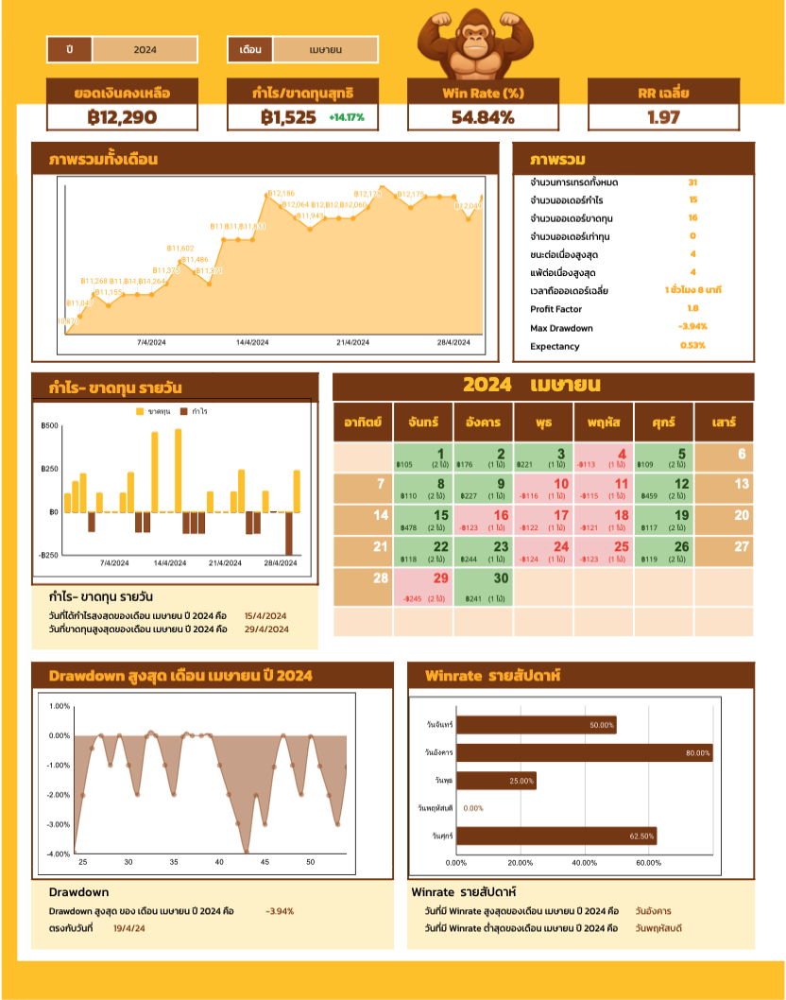
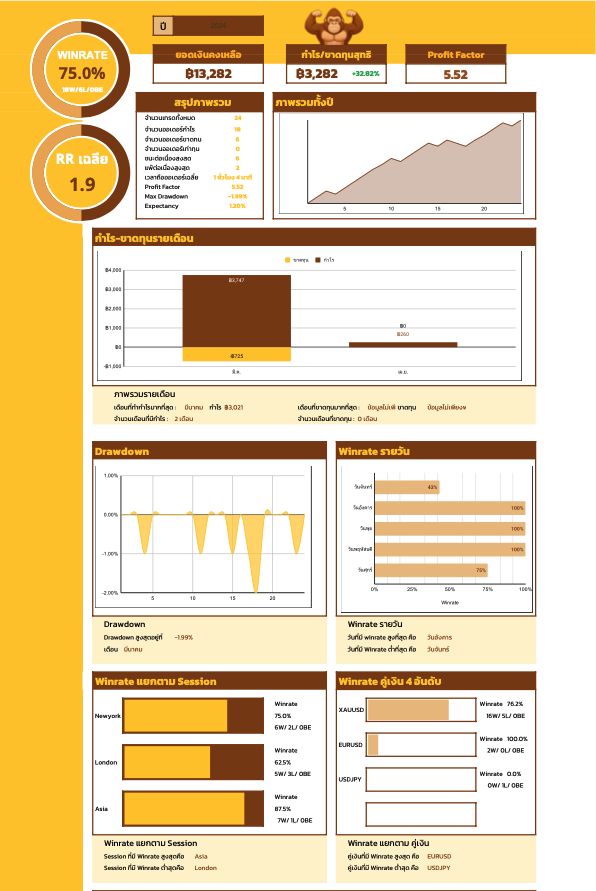
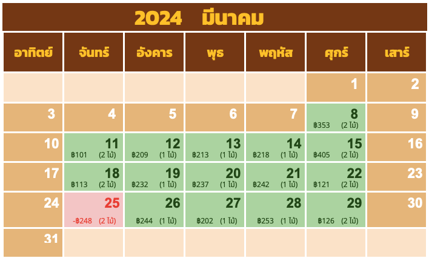

Logitrade Journal มี Dashboard อะไรบ้าง?

Sheet สรุปรายเดือน
ติดตามผลลัพธ์การเทรดแบบละเอียดในแต่ละเดือน เห็นกำไร-ขาดทุน รายวัน พร้อมปฏิทินสรุปผล วิเคราะห์ Winrate, RR, Drawdown ช่วยคุณเข้าใจและปรับปรุงได้ทันที

Sheet สรุปรายปี
มองภาพรวมการเทรดทั้งปีแบบชัดเจน สรุปกำไรสะสม แนวโน้มการเติบโต และประสิทธิภาพของระบบ เปรียบเทียบผลลัพธ์ พัฒนาการเทรดได้อย่างเป็นระบบ

Dashboard ภาพรวมการเทรด
เห็นภาพรวมกำไร-ขาดทุน แบบเรียลไทม์ วิเคราะห์ผลลัพธ์การเทรด แยกเป็นสถิติสำคัญ ช่วยให้เข้าใจภาพรวมหน้าเดียว

ปฏิทินผลลัพธ์การเทรด
สรุปผลการเทรดในรูปแบบปฏิทิน เห็นวันไหนกำไร/ขาดทุน วิเคราะห์พฤติกรรมการเทรดได้ง่ายขึ้น

Drawdown อัตโนมัติ
แสดงช่วงขาดทุนสูงสุด พร้อมกราฟแนวโน้ม ช่วยคุมเงินทุนได้ดีขึ้น

Winrate รายสัปดาห์
แสดงอัตราการชนะในแต่ละวันของสัปดาห์ รู้ทันทีว่าวันไหนคุณเทรดได้ดีที่สุด และควรโฟกัสวันไหน

Winrate แยกตาม Session
วิเคราะห์ผลลัพธ์ตามช่วงเวลา (Asia / London / New York) ช่วยให้คุณรู้ว่า Session ไหนทำกำไรได้ดีที่สุด และควรเลี่ยงช่วงไหน

Winrate แยกตามระบบเทรด
เปรียบเทียบผลลัพธ์ของแต่ละกลยุทธ์ เห็นชัดว่า “ระบบไหนทำเงิน” และ “ระบบไหนควรปรับปรุง”